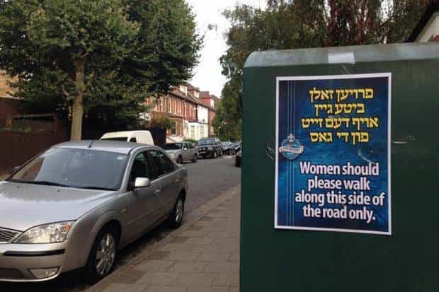

< < < Back
In Defence Of The London Ultra-Orthodox Jews Who Banned Women From Driving – Return Of Kings
The scandal emerged a fortnight ago that the Belz Hasidim, an Ultra-Orthodox Jewish sect with heavy numbers in London’s Stamford Hill, had banned all female members of the community from driving motor vehicles. The group belong to the wider movement and practice of Hasidism, a stream of Ultra-Orthodox Judaism with mystical and messianic overtones.
Hasidim, and especially the Belz, so named after the Ukrainian town they originate from, are known for their kaftans, curly sidelocks and utter restraint and conservatism in their social practices. Coming from such an eccentric quarter, the edict issued by community leaders banning Belz women from driving was sure to stir the pot of the “tolerance” lobby in Britain.
“Not the done thing for a lady to drive”
The essence of the diktat was that women should not drive, for fear of compromising “rules of modesty” as enforced by Belzer rabbis. Kids dropped of by mothers in their cars would not be allowed to come to school for the day, as an enforcement mechanism.
Rabbis provided justification for this in terms of “It’s always been regarded as not the done thing for a lady to drive.” They also did, however provide for a special process by which mothers who had no other choice but to drive could appeal to a committee to do so. Sounds eminently reasonable when you consider that the Belz are a private group of people organising relations between themselves
Roadside poster in Stamford Hill prohibiting women from walking.
The lobby of the Perpetually Aggrieved awakens
The first reaction of rank feminist disapproval came within the fortress. Dina Brawer, the UK ambassador of the Jewish Orthodox Feminist Alliance, said: “What this is really about is the curtailing of women’s freedom of movement rendering them dependent on men. It’s an issue of power and control not one of religious sensibility.
Or, translated from sociology-speak:
Muh patriarchy
Another Jewish critic, Ella Marks of the “League of Jewish Women” said “I can see no question of it being immodest and I would not want a repeat of the situation in Saudi Arabia which is certainly a patriarchal society.”
Saudi Arabia. Because the degradation of not being allowed to drive is concomitant with the degradation of having an Sheikh use you as a personal shitter for $10,000 a night.
After this, as if like clockwork, the government piled in. Nicky Morgan, one of David Cameron’s government appointments on the basis that the appointee has a vagina, the cabinet’s Education Secretary, raised her quota-hire head above the parapet to say that such a ban was “unacceptable.”
Nicky Morgan is a Tory lickspittle keen to be seen to look good before the Feminist lobby
Gloria De Piero MP, perennial bag of useless and Labour Party politician, even wrote to the chief Quango in charge of Human Rights, the Equalities and Human Rights Commission, to ask them to investigate the Belzers. A private group arranging their own affairs! Her complaints were based on Labour’s freedom-destroying Equality Act legislation.
The complaint precipitated more pompous letter-writing between the nonentities at the EHRC and the nonentities in the Labour Party, until the following statement was issued by a “spokesperson” at the EHRC:
This sort of discrimination has no place in our society and we will be writing to leaders of Hasidic Belz educational institutions to underline their legal obligations.
“Our society” by which the mean of course the society of humourless, lawbook-waving turds in suits who profess to build the progressive utopia that Lenin and Stalin didn’t quite manage to.
By nannying and mollycoddling everyone from cradle to grave.
For the greater good.
What the Ultra Orthodox Jews had to say for themselves
A reactionary writing in the Jewish press and defending the ban posed the requisite question: “is there nothing else [apart from the ban] to talk about right now? Are England’s schools filled to the brim with stable, well-adjusted thriving children?”
As if to vindicate the rhetoric of the complainant, an adherent of Hasidism himself, two weeks later in a separate case, a 14-year old in Bradford stabbed his teacher. He was remanded in custody at Bradford Magistrates’ Court for attempted murder.
Stamford Hill Jews celebrating the Jewish holiday of Purim
Moreover, these terribly oppressed Belz women, who are so incapable of articulating a thought that they need a raft of self-appointed moral protectors to speak on their behalf through the intermediary of the British Quangocracy, even issued a statement. They said they felt “extremely privileged and valued to be part of a community where the highest standards of refinement, morality and dignity are respected.”
“We believe that driving a vehicle is a high pressured activity where our values may be compromised by exposure to selfishness, road-rage, bad language and other inappropriate behaviour,” they went on
“We do, however, understand that there are many who conduct lifestyles that are different to ours, and we do not, in any way, disrespect them or the decisions they make.”
So, in other words, very good reasons for not allowing women to drive, and utter acceptance on their part. With a sprinkling of “leave us be if you claim yourself so ‘tolerant’.”
Perhaps these Belzer folk are onto something. The mainstream British majority, a morass of iPhone-addicted worshipers at the altar of Jade Goody, have little to offer as far “refinement, morality and dignity” are concerned. Just look at this 14 year old girl, who recently appeared in court charged with beating up the boy in the picture. Not many similar cases in the “Belzer” community, I bet.
The state should stay out of regulating the affairs of private individuals
Bar the occasional murmurs of concealed paedophilia, the Hasidic Jewish community appear to be a model of morality in the sea of East London’s degeneracy. Just down the road in Hoxton and Shoreditch, every Friday night the town becomes a sea of degeneracy as mandied-up sluts cavort, covered in tattoos and smoking cigarettes and pot, with name-dropping hipster retards from the fashion and entertainment industry and other assorted decadent filth.
Every one of them, to a man, will be readers of the Guardian, and every one will hold the same cookie cutter progressive political positions, and will find themselves disgusted, nay, physically repulsed by the thought that somewhere on their progressive earth, a group of people dares to divide and organise themselves on lines of gender.
Further out into central and north London, we find the leftist intelligentsia who pour their intellectual dross into the vapid empty brains of the hip and fashionable. Sitting in their leafy Islington townhouses, or in their air-conditioned NGOs, these ministers of Secular Good live a life of militant opposition to the very notion of self-determination.
Everybody must subscribe to the same bland, generic list of “human rights.” Deviation is impermissible, even when harmless. Cases like the present, as well as cases like the cake shop which was fined for refusing to bake a cake for a gay wedding, are treated as if they were the most abject transgressions against common morality, akin to murder or torture.
Analysts predict the “ironic anti-Semitism” bubble will burst this year.
And in any case, Hasidic Belzers are doing their women a favour by banning them from driving. In the banana state of UK, driving is a liability, and carries a large chance of death under the wheels of some Khat-chewing migrant with no insurance, or slag on her way to a hair appointment who thinks her empowered multitasking capabilities extend to pursuing text message conversations at the wheel of a motor vehicle.
A close look at the Hasidim will reveal that, while the community has its own problems, they have been admirably resistant for the modern malaise of change for the sake of change, and have maintained a harmonious division of the community on gender lines, as well as sky-high birthrates.
Their women are, it should be noted, utterly lacking in shit tattoos, Skrillex haircuts, and sociology degrees. Moreover, much like our own community, they have come and continue to come under sustained assault from the degenerate liberal intelligentsia. For that they deserve a hat-tip, even from the Jew-baiters.
Read More: Is Kacee Boswell Lying About Being Raped By Ronnie Radke?


{kind=link}
{kind=link}
{kind=link}
{kind=link}
{kind=link}